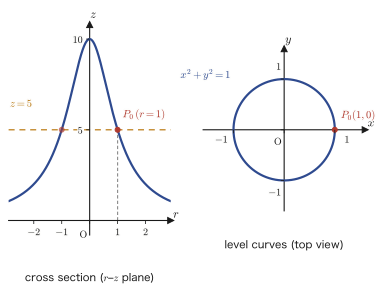
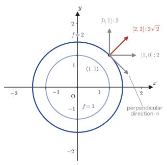

Chapter 18Scalar Fields, Vector Fields, and the Gradient
Chapters 15 through 17 dealt with a single point in space and with vector-valued functions—a single vector $\vec a$, or a single curve $\vec P(t)$ moving with the parameter $t$. In physics and engineering practice, however, what we really want to handle is usually a situation in which “some quantity is assigned to every point of space.” For example, every point in a room has a number, the air temperature, assigned to it (the temperature distribution of the room). Or every point of a flowing river has the speed and direction of the flow, that is, a vector, assigned to it (the flow-velocity distribution). The former is called a scalar field, and the latter a vector field. In this chapter we introduce these two notions of a “field” and study the gradient, an especially important operation on fields—a tool of differentiation that produces a vector field from a scalar field.
You have, in fact, already seen the gradient vector $\nabla f$ just once. In the method of Lagrange multipliers in Chapter 6, Section 6.7, it made a quiet appearance, with only the symbol borrowed, in the explanation that “an extremum occurs at a point where the gradient vector $\nabla f$ of the contour line and the gradient vector $\nabla g$ of the constraint line are parallel.” In this chapter we define, from the very beginning and with care, what that symbol $\nabla$ actually is and what it computes, and we prove why it is “perpendicular to the contour lines and points in the direction in which the value of the function increases fastest.” The goal of this chapter is to be able to find the equation of the tangent plane of a surface in just a few lines by using a single gradient vector.
- The definitions of scalar fields and vector fields, and concrete examples (temperature distribution, velocity field)
- Level curves and level surfaces—a generalization of the “contour lines” learned in Chapter 6—and the definition of streamlines and the differential equation $\dfrac{dx}{f}=\dfrac{dy}{g}=\dfrac{dz}{h}$
- The definition of the gradient vector $\nabla f=\grad f$, and the nabla (del) operator $\nabla$
- Gradient formulas: the linearity, product, quotient, and chain rules, and $\nabla|\vec P|,\ \nabla|\vec P|^n,\ \nabla\ln|\vec P|$
- The geometric meaning of the gradient vector—it is perpendicular to level curves and level surfaces, and it points in the direction in which the value of the function increases fastest
- How to find the equation of a tangent plane by using the gradient vector
Source notes: Yasuhide Mochizuki, Mathematics Notes: Vector Analysis, pp. 25–32.
18.1 Scalar Fields and Vector Fields
Let us start with a concrete example. Imagine the inside of a room in winter. It is warm near the heater and cold by the window—a single real number, the air temperature, corresponds to every point in the room. We already learned in Chapter 6 that this situation, in which “one number is determined at each point,” can be expressed in formulas as a function $f(x,y)$ or $f(x,y,z)$ of two variables (a plane) or three variables (space). Now imagine the outdoors on a windy day: this time, a vector, that is, the strength and direction of the wind, corresponds to every point. We use the same word “field” in both cases, but we distinguish them according to whether what corresponds to each point is a number (a scalar) or a vector.
Definition 18.1: Scalar field
When a scalar (a real number) $f(P)$ is assigned to each point $P$ in a region $D$ of the plane or of space, the region $D$ is called a scalar field. If we write it in terms of the coordinates of $P$ as $f(x,y)$ (plane) or $f(x,y,z)$ (space), this is exactly the multivariable function we learned about in Chapter 6—the name “field” is nothing more than a way of viewing a function anew as a “distribution of a quantity spread through space.”
Definition 18.2: Vector field
When a vector $\vec f(P)$ is assigned to each point $P$ in a region $D$ of the plane or of space, the region $D$ is called a vector field. It helps to think of each component as itself being a scalar field, as in $\vec f(x,y)=[f(x,y),\,g(x,y)]$ for the plane and $\vec f(x,y,z)=[f(x,y,z),\,g(x,y,z),\,h(x,y,z)]$ for space.
From this chapter onward (Chapters 18–20), the multivariable functions $f,g,h$, etc. that appear are all assumed, unless stated otherwise, to be totally differentiable (Chapter 6, Section 6.3). If a function is totally differentiable, all of its partial derivatives exist, and a tangent plane can be properly drawn to the graph of the function—the gradient vector treated in this chapter is a tool for extracting the information carried by this tangent plane.
Example 18.1: Identifying scalar fields and vector fields and computing their values
(a) $f(x,y,z)=x^2+2yz$ is a scalar field, and $\vec F(x,y,z)=[y,\,z,\,x]$ is a vector field. Find the value of $f$ and the value of $\vec F$ at the point $(1,-1,2)$.
Solution. (a) Since $f$ assigns a real number (a scalar) to each point, it is a scalar field; since $\vec F$ assigns a vector with three components to each point, it is a vector field. In accordance with Definitions 18.1 and 18.2, we simply substitute the coordinates of the point as they are.
$$ f(1,-1,2) = 1^2+2\cdot(-1)\cdot2 = 1-4 = -3 $$ $$ \vec F(1,-1,2) = [\,(-1),\ 2,\ 1\,] = [-1,\,2,\,1] $$(verified with SymPy: $f=-3$, $\vec F=(-1,2,1)$)
18.2 Level Curves and Level Surfaces
The tools most often used to grasp the “shape” of a scalar field are the level curve and the level surface. In fact, these are not new concepts. In Chapter 6, Section 6.1, in order to study the shape of the graph (a surface) of a function $z=f(x,y)$ of two variables, we considered “the curve in the $xy$-plane obtained by fixing the height $z=c$”—the contour line. A level curve is precisely this contour line, renamed in the language of scalar fields. When we extend this to three variables (space), the contour line becomes a surface (the level surface).
Definition 18.3: Level curve
Let $f(x,y)$ be the scalar-valued function corresponding to a planar scalar field $D$, and take a point $P_0(x_0,y_0)$ in the region $D$. Then the set of all points $P(x,y)$ satisfying the equation
$$ f(x,y)=f(x_0,y_0) $$traces out (in many cases) a single curve. This curve is called the level curve through $P_0$. In short, the level curve is the curve formed by finding the value of $f$ at one point $P_0$ and collecting all the points that give the same value.
Illustration 18.1: Level curve of a planar scalar field
Consider the planar scalar field $f(x,y)=\dfrac{10}{x^2+y^2+1}$. Find the level curve through the point $P_0(1,0)$.
Solution. First we find the value of $f$ at $P_0(1,0)$.
$$ f(1,0) = \frac{10}{1^2+0^2+1} = \frac{10}{2} = 5 $$By Definition 18.3, the level curve through $P_0$ is the set of points satisfying the equation $f(x,y)=5$. Solving this, we get
$$ \frac{10}{x^2+y^2+1} = 5 $$Multiplying both sides by $x^2+y^2+1$ (this is always positive, so there is no need to worry about dividing by zero) and rearranging, we obtain
$$ x^2+y^2+1 = \frac{10}{5} = 2 \qquad\therefore\ x^2+y^2 = 1 $$That is, the level curve through $P_0(1,0)$ is the circle $x^2+y^2=1$ of radius $1$ centered at the origin (indeed $P_0$ also lies on this circle: this can be confirmed from $1^2+0^2=1$). (verified with SymPy)

Definition 18.4: Level surface
Let $f(x,y,z)$ be the scalar-valued function corresponding to a spatial scalar field $D$, and take a point $P_0(x_0,y_0,z_0)$ in the region $D$. Then the set of all points $P(x,y,z)$ satisfying the equation
$$ f(x,y,z)=f(x_0,y_0,z_0) $$traces out (in many cases) a single surface. This surface is called the level surface through $P_0$. The “curve” of the planar case is simply upgraded to a “surface” in space, and the idea is exactly the same.
Illustration 18.2: Level surface of a spatial scalar field
Consider the spatial scalar field $f(x,y,z)=\dfrac{3x^2+2y^2+z^2}{2x^2+y^2+1}$. Find the level surface through the point $P_0(0,0,1)$.
Solution. The value of $f$ at $P_0(0,0,1)$ is
$$ f(0,0,1) = \frac{3\cdot0^2+2\cdot0^2+1^2}{2\cdot0^2+0^2+1} = \frac{1}{1} = 1 $$By Definition 18.4, the level surface through $P_0$ is the set of points satisfying $f(x,y,z)=1$.
$$ \frac{3x^2+2y^2+z^2}{2x^2+y^2+1} = 1 $$Multiplying both sides by $2x^2+y^2+1$ (always positive), we get
$$ 3x^2+2y^2+z^2 = 2x^2+y^2+1 $$Moving $2x^2+y^2$ from the right-hand side to the left-hand side and rearranging, we obtain
$$ (3x^2-2x^2)+(2y^2-y^2)+z^2 = 1 \qquad\therefore\ x^2+y^2+z^2 = 1 $$That is, the level surface through $P_0(0,0,1)$ is the sphere of radius $1$ centered at the origin (one can also confirm from $0^2+0^2+1^2=1$ that $P_0$ itself is the point on this sphere corresponding to its “north pole”). (verified with SymPy)
Example 18.2: Finding level curves and level surfaces (with functions different from those in the original notes)
(a) Consider the planar scalar field $f(x,y)=x^2-4y$. Find the level curve through the point $P_1(2,1)$.
(b) Consider the spatial scalar field $f(x,y,z)=x^2+y^2-2z$. Find the level surface through the point $P_2(1,1,1)$.
Solution. (a) First, following Definition 18.3, we find the value of $f$ at $P_1(2,1)$.
$$ f(2,1) = 2^2-4\cdot1 = 4-4 = 0 $$Therefore the level curve through $P_1$ is the set of points satisfying the equation $f(x,y)=0$.
$$ x^2-4y = 0 \qquad\Longleftrightarrow\qquad y = \frac{x^2}{4} $$That is, the level curve through $P_1(2,1)$ is the parabola $y=\dfrac{x^2}{4}$ (that $P_1$ lies on it can be confirmed by substituting $x=2$, which gives $y=\dfrac{2^2}{4}=1$).
(b) Similarly, following Definition 18.4, we find the value of $f$ at $P_2(1,1,1)$.
$$ f(1,1,1) = 1^2+1^2-2\cdot1 = 1+1-2 = 0 $$Therefore the level surface through $P_2$ is the set of points satisfying the equation $f(x,y,z)=0$.
$$ x^2+y^2-2z = 0 \qquad\Longleftrightarrow\qquad z = \frac{x^2+y^2}{2} $$That is, the level surface through $P_2(1,1,1)$ is the paraboloid of revolution $z=\dfrac{x^2+y^2}{2}$ (that $P_2$ lies on it can be confirmed by substituting $x=y=1$, which gives $z=\dfrac{1^2+1^2}{2}=1$). (verified with SymPy)
18.3 Streamlines
For vector fields, too, there is a tool that makes their “shape” visible. Picture the arrows on a weather map showing the flow of the wind—just looking at scattered arrows already tells you how the wind is behaving, but if you draw a single smooth curve along the arrows (the path the wind follows), the overall picture of the flow becomes much easier to grasp. This “curve running along the arrows (the vector field)” is called a streamline.
Definition 18.5: Streamline
Let $\vec f(P)$ be the vector-valued function corresponding to the vector field $D$. Suppose there is a curve $C$ in the region $D$ such that, at each point $P$ on $C$, $\vec f(P)$ is tangent to $C$ at that point (that is, it is a tangent vector of $C$). Then this curve $C$ is called a streamline.
Let us derive a way to find streamlines by formula. Represent the curve $C$, using a parameter $t$, as $\vec P(t)=[x(t),y(t),z(t)]$ (this is the parametric representation by a vector-valued function that we learned in Chapter 17). Then the tangent vector of $C$ is given by
$$ \frac{d\vec P}{dt} = \left[\frac{dx}{dt},\,\frac{dy}{dt},\,\frac{dz}{dt}\right] $$(this is the differentiation of vector-valued functions that we learned in Chapter 17—all we had to do was differentiate each component with respect to $t$). By Definition 18.5, $\vec f(P)=[f,g,h]$ (each component is a function of $x,y,z$, but on $C$ it is also a function of $t$) is also tangent to $C$ at the same point, so $\vec f(P)$ and $\vec P'(t)$ are parallel vectors. That is, there exists a nonzero real number $k$ for which
$$ [f,\,g,\,h] = k\left[\frac{dx}{dt},\,\frac{dy}{dt},\,\frac{dz}{dt}\right] $$holds (we assume $\vec f(P)\neq\vec 0$). That two vectors are parallel, with the same proportionality constant $k$ for every component, means that the ratios of the corresponding components are all equal, so we have
$$ f : g : h = \frac{dx}{dt} : \frac{dy}{dt} : \frac{dz}{dt} $$Rewriting this from the ratio form into the fraction form, we obtain
$$ \frac{\dfrac{dx}{dt}}{f} = \frac{\dfrac{dy}{dt}}{g} = \frac{\dfrac{dz}{dt}}{h} $$Then, formally canceling the $dt$ that appears in the numerator and denominator of each expression, we obtain the following relation.
This is a differential equation in the variables $x,y,z$ (it does not contain $t$ explicitly), and by solving it (that is, by solving two simultaneous first-order differential equations) we obtain the equations of the streamlines.
Example 18.3: Finding the equation of streamlines
Find the streamlines of the vector field $\vec F(x,y)=[x,\,-y]$ in the plane.
Solution. Since $\vec F=[f,g]=[x,-y]$, Eq. \eqref{eq:18-streamline} (for the plane, where there is no $z$ component) reads
$$ \frac{dx}{x} = \frac{dy}{-y} $$Integrate each side (assume $x\neq0,\,y\neq0$).
$$ \int\frac{dx}{x} = -\int\frac{dy}{y} \quad\Longrightarrow\quad \ln|x| = -\ln|y| + C_1 $$Moving $-\ln|y|$ on the right-hand side to the left-hand side gives $\ln|x|+\ln|y|=C_1$, that is, $\ln|xy|=C_1$. Exponentiating both sides (and letting $C_2$ denote the new positive constant $e^{C_1}$), we obtain
$$ |xy| = C_2 \quad\Longrightarrow\quad xy = C\ (C\text{ is a nonzero real constant}) $$Therefore, the streamlines are the family of hyperbolas $xy=C$, which have the shape of the graph of inverse proportion. (Check: if a curve $x(t),y(t)$ satisfies $\dfrac{dx}{dt}=x,\ \dfrac{dy}{dt}=-y$, then $\dfrac{d}{dt}(xy)=y\dfrac{dx}{dt}+x\dfrac{dy}{dt}=yx+x(-y)=0$, which confirms that $xy$ is constant, independent of $t$. Verified with SymPy.)
18.4 Definition of the Gradient Vector
Now we come to the main character of this chapter. Given a scalar field $f$, we can build a vector that bundles together, at each point, the way it “increases.” Before giving the definition, let us see what this vector looks like with concrete numbers.
Consider the scalar field $f(x,y)=x^2+y^2$ and examine how $f$ “increases” at the point $(1,1)$. Using partial derivatives (Chapter 6, Section 6.2),
$$ \pdiff{f}{x} = 2x,\qquad \pdiff{f}{y} = 2y $$so at the point $(1,1)$ both are equal to $2$. Now we form the vector $[2,\,2]$ by lining up the two values of the partial derivatives, and provisionally call it the “slope vector.” Then, starting from the point $(1,1)$, let us move a little in the direction of various unit vectors $\vec e$ and compare the rate at which $f$ increases (we estimate this by the inner product $[2,2]\cdot\vec e$—which is exactly the idea behind the total differential $\Delta f\fallingdotseq\pdiff{f}{x}\Delta x+\pdiff{f}{y}\Delta y$).
(i) $\vec e=[1,0]$ (the $x$-axis direction): rate of increase $= 2\cdot1+2\cdot0 = 2$.
(ii) $\vec e=[0,1]$ (the $y$-axis direction): rate of increase $= 2\cdot0+2\cdot1 = 2$.
(iii) $\vec e=\left[\dfrac{1}{\sqrt2},\dfrac{1}{\sqrt2}\right]$ (the same direction as the slope vector $[2,2]$): rate of increase $=2\cdot\dfrac1{\sqrt2}+2\cdot\dfrac1{\sqrt2}=\dfrac{4}{\sqrt2}=2\sqrt2\approx2.83$.
(iv) $\vec e=\left[\dfrac{1}{\sqrt2},-\dfrac{1}{\sqrt2}\right]$ (the direction perpendicular to the slope vector): rate of increase $=2\cdot\dfrac1{\sqrt2}+2\cdot\left(-\dfrac1{\sqrt2}\right)=0$.
As we can see, moving in the same direction as the slope vector $[2,2]$ (case (iii)) gives a larger rate of increase ($2\sqrt2>2$) than moving in the $x$-axis or $y$-axis direction, and conversely, in the direction perpendicular to the slope vector (case (iv)), $f$ neither increases nor decreases at all. In other words, this “slope vector” points exactly in the direction in which the value of $f$ increases fastest—and this is the true nature of the gradient vector that we are about to define. (A general proof of this fact will be given in Section 18.6.)

In general, we define this “slope vector,” that is, the vector formed by lining up all the partial derivatives, as follows.
Definition 18.6: Gradient vector
(I) The case of a planar scalar field: we denote the gradient vector of a planar scalar field $f(x,y)$ by $\grad f$ and define it by
$$ \grad f = \nabla f = \left[\pdiff{f}{x},\ \pdiff{f}{y}\right] $$(Note that the left-hand side and the middle expression are vectors made from the scalar field $f$.)
(II) The case of a spatial scalar field: we denote the gradient vector of a spatial scalar field $f(x,y,z)$ by $\grad f$ and define it by
$$ \grad f = \nabla f = \left[\pdiff{f}{x},\ \pdiff{f}{y},\ \pdiff{f}{z}\right] $$This is the definition.
About the symbol: $\nabla$ (nabla)
$\grad$ is an abbreviation of the English word gradient (slope, incline). The symbol $\nabla$ is called the nabla or del operator, or the Hamilton operator (named after the Irish mathematician William Rowan Hamilton). $\nabla$ itself is “a tool that takes a function and returns a vector”—formally, it is best thought of as the vector $\nabla=\left[\pdiff{}{x},\pdiff{}{y},\pdiff{}{z}\right]$ whose components are differential operators. $\nabla$ is a multipurpose symbol: it is used to express not only the gradient ($\grad$) of this chapter but also two other important operations that we will study in the next chapter, the divergence ($\mathrm{div}$) and the curl (also called rotation; $\mathrm{rot}$). In fact, you have already seen the notation $\nabla f,\nabla g$ once, in Chapter 6, Section 6.7 (the method of Lagrange multipliers). There we explained it only as “the points where the gradient vectors become parallel,” and the true nature of that gradient vector is precisely the $\nabla f$ that we have just defined.
Example 18.4: Computing a gradient vector
Find the gradient vector $\nabla f$ of the spatial scalar field $f(x,y,z)=x^2yz-y^3$, and find its value at the point $(1,2,-1)$.
Solution. Following Definition 18.6(II), we differentiate $f$ partially with respect to each of $x,y,z$. The basic rule of partial differentiation (Chapter 6, Section 6.2) was to treat all variables except one as constants: when differentiating with respect to $x$ we regard $y,z$ as constants, when differentiating with respect to $y$ we regard $x,z$ as constants, and so on.
$$ \pdiff{f}{x} = 2xyz,\qquad \pdiff{f}{y} = x^2z-3y^2,\qquad \pdiff{f}{z} = x^2y $$(For $\pdiff{f}{x}$: since $yz$ is treated as a constant, we multiply $yz$ by the derivative $2x$ of $x^2$. For $\pdiff{f}{y}$: the term $x^2z\cdot y$ differentiates to $x^2z$ with respect to $y$, treating $x^2z$ as a constant, and the term $-y^3$ gives $-3y^2$. For $\pdiff{f}{z}$: only the term $x^2y\cdot z$ contains $z$, so $x^2y$ remains.) Therefore, the gradient vector is
$$ \nabla f = \left[2xyz,\ x^2z-3y^2,\ x^2y\right] $$Substituting $x=1,y=2,z=-1$ into this gives
$$ \nabla f(1,2,-1) = \big[\,2\cdot1\cdot2\cdot(-1),\ \ 1^2\cdot(-1)-3\cdot2^2,\ \ 1^2\cdot2\,\big] = [\,-4,\ -1-12,\ 2\,] = [-4,\,-13,\,2] $$(verified with SymPy)
18.5 Formulas for the Gradient Vector
Since $\nabla$ is merely a symbol that lines up partial derivatives (that is, derivatives), $\nabla$ also inherits, unchanged, the properties that ordinary differentiation (the one-variable $\dfrac{d}{dx}$) satisfies—linearity, the product rule, the quotient rule, and the chain rule.
Formula 18.1: Basic formulas for the gradient vector
Let $f,g$ be scalar-valued functions (with the same number of variables). Then the following hold.
(I) $\nabla(C_1 f+C_2 g) = C_1\nabla f+C_2\nabla g$ ($C_1,C_2$ are constants)
(II) $\nabla(fg) = (\nabla f)g+f(\nabla g)$
(III) $\nabla\!\left(\dfrac{f}{g}\right) = \dfrac{(\nabla f)g-f(\nabla g)}{g^2}$ ($g\neq0$)
(IV) $\nabla\big(g(f)\big) = g'(f)\,\nabla f$ ($g$ is a function of one variable, and $g(f)$ is a composite function)
If we regard $\nabla$ as the operation of “differentiating,” then (I)–(III) have exactly the same forms as the linearity, product rule, and quotient rule of the one-variable case.
To try this out, let us verify that (II) holds in the case of two variables. The first component (the $x$ component) of $\nabla(fg)$ is, by the ordinary product rule (we are only differentiating partially with respect to $x$, regarding everything other than $x$ as constant, so the one-variable product rule can be used as is),
$$ \pdiff{(fg)}{x} = \pdiff{f}{x}\,g+f\,\pdiff{g}{x} $$and this coincides exactly with the first component $\pdiff{f}{x}g+f\pdiff{g}{x}$ of $(\nabla f)g+f(\nabla g)$. The second component (the $y$ component) is similar. In other words, (II) simply applies the one-variable product rule to each component separately. (I) and (III) can be verified by exactly the same idea (apply the one-variable formula to each component), so you should try them yourself. Only (IV) requires some care because a composite function is involved, and it is the only one for which a proof is given in the original notes as well. Let us follow that proof below.
Proof: Formula 18.1(IV)
We prove it for the case of the plane ($f=f(x,y)$). To partially differentiate the composite function $g(f(x,y))$ with respect to $x$, we first differentiate $g$ with respect to $f$ (its argument), then differentiate $f$ with respect to $x$ and multiply the two—it suffices to apply the one-variable differentiation formula for composite functions (the chain rule, Chapter 3) while continuing to regard everything other than $x$ as constant.
$$ \nabla\big(g(f)\big) = \left[\pdiff{g(f)}{x},\ \pdiff{g(f)}{y}\right] = \left[\underbrace{\pdiff{g(f)}{f}}_{g'(f)}\cdot\pdiff{f}{x},\ \ \underbrace{\pdiff{g(f)}{f}}_{g'(f)}\cdot\pdiff{f}{y}\right] $$Pulling the factor $g'(f)$ that is common to every component out of the vector, we obtain
$$ = g'(f)\underbrace{\left[\pdiff{f}{x},\,\pdiff{f}{y}\right]}_{\nabla f} = g'(f)\cdot\nabla f $$The case of three-dimensional space (three components) is entirely analogous. ∎
Next we derive three formulas for functions of the position vector, which are especially frequently used among the gradient-vector formulas. First let us confirm the notation. The vector from the origin to the point $P(x,y)$ (or $P(x,y,z)$), $\vec P=[x,y]$ (or $[x,y,z]$), is called the position vector, and its magnitude (norm) is written $|\vec P|=\sqrt{x^2+y^2}$ (or $\sqrt{x^2+y^2+z^2}$)—this is the distance from the origin to the point $P$.
Formula 18.2: Gradient of the position vector
$$ \nabla|\vec P| = \frac{\vec P}{|\vec P|} $$Proof: Formula 18.2
In the case of the plane, from the position vector $\vec P=[x,y]$ we have $|\vec P|=\sqrt{x^2+y^2}=(x^2+y^2)^{1/2}$. To partially differentiate this with respect to $x$, we regard $(x^2+y^2)^{1/2}$ as a composite function of the “outer $(\ )^{1/2}$” and the “inner $x^2+y^2$” and use the one-variable chain rule for composite functions. Differentiating the outer function gives $\dfrac12(x^2+y^2)^{-1/2}$, and differentiating the inner function (partially differentiating $x^2+y^2$ with respect to $x$, treating $y$ as a constant) gives $2x$, so
$$ \pdiff{}{x}(x^2+y^2)^{1/2} = \frac12(x^2+y^2)^{-1/2}\cdot 2x = \frac{x}{\sqrt{x^2+y^2}} $$Similarly for $y$: partially differentiating the inner function with respect to $y$ merely gives $2y$, so
$$ \pdiff{}{y}(x^2+y^2)^{1/2} = \frac12(x^2+y^2)^{-1/2}\cdot 2y = \frac{y}{\sqrt{x^2+y^2}} $$Therefore, we obtain
$$ \nabla|\vec P| = \left[\frac{x}{\sqrt{x^2+y^2}},\ \frac{y}{\sqrt{x^2+y^2}}\right] = \frac{1}{\sqrt{x^2+y^2}}[x,y] = \frac{1}{|\vec P|}\vec P = \frac{\vec P}{|\vec P|} $$The case of three-dimensional space (three components) can be shown in exactly the same way, simply by repeating the same computation for the $z$ component. ∎
Formula 18.3: Gradient of a power of the position vector
$$ \nabla|\vec P|^n = n\,|\vec P|^{n-2}\,\vec P \qquad(n\text{ is a real number}) $$Proof: Formula 18.3
Let $f=|\vec P|$. Then by Formula 18.2, $\nabla f=\dfrac{\vec P}{|\vec P|}$. Moreover, $|\vec P|^n=f^n$ can be regarded as the composition $g(f)$ of the one-variable function $g(u)=u^n$ ($g'(u)=nu^{n-1}$) and $f$. Hence, by Formula 18.1(IV),
$$ \nabla|\vec P|^n = \nabla g(f) = g'(f)\cdot\nabla f = n f^{n-1}\cdot\frac{\vec P}{|\vec P|} = n\,|\vec P|^{n-1}\cdot\frac{\vec P}{|\vec P|} $$Here, noting that dividing $|\vec P|^{n-1}$ by $|\vec P|$ lowers the exponent by one and gives $|\vec P|^{n-2}$, we obtain
$$ = n\,|\vec P|^{n-2}\,\vec P $$∎
On an error in the original notes
In this proof in the original notes (p. 28), the coefficient $n$ that should appear in the derivative $g'(f)=nf^{n-1}$ of $g(f)=|\vec P|^n=f^n$ is omitted, and the intermediate expression reads $\nabla g(f)=|\vec P|^{n-1}\cdot\dfrac{\vec P}{|\vec P|}=|\vec P|^{n-2}\vec P$ (with no coefficient $n$). This contradicts the formula $\nabla|\vec P|^n=n|\vec P|^{n-2}\vec P$ (with the coefficient $n$) that the notes themselves state at the beginning. Since it is clear that the coefficient $n$ is required when one computes with $g'(f)=nf^{n-1}$ exactly as the differentiation formula for composite functions (Formula 18.1(IV)) prescribes, we judged this to be a simple omission. In this book, we have written the formula with the coefficient $n$, as in the formula at the beginning and in the proof above.
Formula 18.4: Gradient of the logarithm of the position vector
$$ \nabla\ln|\vec P| = \frac{\vec P}{|\vec P|^2} $$Proof: Formula 18.4
Let $f=|\vec P|$. Then $\ln|\vec P|=\ln f$ is the composition of the one-variable function $g(u)=\ln u$ ($g'(u)=\dfrac1u$) and $f$. By Formula 18.1(IV), we obtain
$$ \nabla\ln|\vec P| = g'(f)\cdot\nabla f = \frac{1}{|\vec P|}\cdot\frac{\vec P}{|\vec P|} = \frac{\vec P}{|\vec P|^2} $$∎
Example 18.5: Applying Formula 18.3 and checking by direct computation
For the position vector $\vec P=[x,y]$ in the plane, find $\nabla\dfrac{1}{|\vec P|}$ (a) using Formula 18.3 (the case $n=-1$) and (b) by partially differentiating $\dfrac{1}{|\vec P|}=(x^2+y^2)^{-1/2}$ directly, and confirm that the two results agree.
Solution. (a) Since $\dfrac{1}{|\vec P|}=|\vec P|^{-1}$, we substitute $n=-1$ into Formula 18.3.
$$ \nabla|\vec P|^{-1} = (-1)\cdot|\vec P|^{-1-2}\cdot\vec P = -|\vec P|^{-3}\vec P = -\frac{\vec P}{|\vec P|^3} $$(b) Computing the $x$ component directly, we partially differentiate $(x^2+y^2)^{-1/2}$ with respect to $x$ by the chain rule for composite functions:
$$ \pdiff{}{x}(x^2+y^2)^{-1/2} = -\frac12(x^2+y^2)^{-3/2}\cdot2x = -x(x^2+y^2)^{-3/2} = -\frac{x}{|\vec P|^3} $$The $y$ component is likewise $-\dfrac{y}{|\vec P|^3}$, so
$$ \nabla\frac{1}{|\vec P|} = \left[-\frac{x}{|\vec P|^3},\,-\frac{y}{|\vec P|^3}\right] = -\frac{1}{|\vec P|^3}[x,y] = -\frac{\vec P}{|\vec P|^3} $$which agrees completely with the result of (a). (verified with SymPy)
18.6 Geometric Meaning of the Gradient Vector
In the numerical example of Section 18.4, we confirmed with concrete numbers that the gradient vector appears to point in “the direction in which the value of $f$ increases fastest.” Here we prove that this holds in general.
18.6.1 The case of a planar scalar field
Let $f(x,y)$ be a totally differentiable scalar-valued function of two variables. Suppose that a curve in the plane can be expressed with a parameter $t$ as $x=x(t),\,y=y(t)$, and let $P(x_P,y_P)$ be a point on this curve. That is, for some $t_P$ we have $x_P=x(t_P),\,y_P=y(t_P)$. What we should note here is that $f(x,y)$ is a function in which $x,y$ can be varied freely, whereas $f(x_P,y_P)$, obtained by fixing the single point $P$, is just a number (a constant).
Now let us consider the level curve $C$ through the point $P$ (Definition 18.3). The points on $C$ satisfy the equation
$$ f(x(t),y(t)) = f(x_P,y_P) $$Since the right-hand side $f(x_P,y_P)$ is a constant, this equation means that “the value of the left-hand side does not change even if we vary $t$.” If we rewrite both sides of this equation using the total differential in $x,y$ (the idea of $\Delta f\fallingdotseq\pdiff{f}{x}\Delta x+\pdiff{f}{y}\Delta y$ that we learned in Chapter 6, Section 6.3, turned into an equality by taking a limit: $df=\pdiff{f}{x}dx+\pdiff{f}{y}dy$), we obtain
$$ \pdiff{f}{x}\,dx + \pdiff{f}{y}\,dy = 0 $$(The right-hand side is $0$ because the left-hand side $f(x_P,y_P)$ is a constant and its total differential is always $0$.) Next, to relate both sides to the changes in $x,y$ (as functions of $t$), we differentiate with respect to $t$. Regarding $dx,dy$ as $\dfrac{dx}{dt}dt,\ \dfrac{dy}{dt}dt$, respectively, and dividing by $dt$, we obtain
$$ \pdiff{f}{x}\cdot\frac{dx}{dt} + \pdiff{f}{y}\cdot\frac{dy}{dt} = 0 \qquad\cdots\ \text{①} $$(Since $f(x_P,y_P)$ is a constant, the right-hand side stays $0$ when differentiated with respect to $t$.) Looking closely at the left-hand side of ①, we notice that it has the form of the inner product of the two vectors $\left[\pdiff{f}{x},\,\pdiff{f}{y}\right]$ and $\left[\dfrac{dx}{dt},\,\dfrac{dy}{dt}\right]$. In fact, applying the definition of the inner product (the sum of the products of corresponding components), ① can be written directly as
$$ \left[\pdiff{f}{x},\,\pdiff{f}{y}\right]\cdot\left[\frac{dx}{dt},\,\frac{dy}{dt}\right] = 0 $$The vector on the left is precisely $\nabla f$ of Definition 18.6, and the vector on the right is the derivative $\vec P'(t)$ of $\vec P(t)=[x(t),y(t)]$ (Chapter 17). Therefore we obtain
Now, $\vec P'(t)$ is none other than a tangent vector to the curve $C$ (the level curve). Eq. \eqref{eq:18-grad-perp} says that “the inner product of $\nabla f$ and the tangent vector $\vec P'(t)$ is $0$,” so by the property that the inner product of two vectors is $0$ when they are perpendicular (high school mathematics; High School Mathematics, Section 7.4), we have $\nabla f\perp\vec P'(t)$. That is,
Theorem 18.1: The gradient vector is perpendicular to the level curve
The gradient vector $\nabla f$ (when it is not the zero vector $0$) is perpendicular to the tangent vector of the level curve $C$ through the point $P$, taken at that point. That is, $\nabla f$ is a normal vector to the level curve $C$ at the point $P$.
So far we have learned that “$\nabla f$ is perpendicular to the level curve,” but there are two perpendicular directions (inward and outward). Which way does it point? To find out, let us return to the approximation formula for the total differential (Chapter 6, Section 6.3)
Suppose we keep $\Delta\vec x$ at a fixed magnitude (say, of length $1$) and change only its direction—that is, we take one step of fixed length from the point $P$ in every possible direction. Then the inner product of the two vectors, $\nabla f\cdot\Delta\vec x=|\nabla f|\,|\Delta\vec x|\cos\theta$ ($\theta$ is the angle between the two vectors), is largest when $\theta=0$ ($\Delta\vec x$ points in the same direction as $\nabla f$), smallest (most negative) when $\theta=180°$ (opposite direction), and equal to $0$ when $\theta=90°$ (perpendicular)—and this is exactly what we confirmed in the numerical example of Section 18.4. We therefore learn the following.
Summary: The three directions indicated by the gradient vector
(i) The direction in which the value of $f$ increases fastest is the direction of $\nabla f$.
(ii) The direction in which the value of $f$ decreases fastest is the direction of $-\nabla f$.
(iii) The directions in which the value of $f$ does not change are those perpendicular to $\nabla f$ (= the directions along the level curve).
About the original notes (how p. 30 is treated)
On p. 30 of the original notes, only the heading “(12) Meaning indicated by the gradient (planar scalar field)” and the opening words “Explaination …” are written; no text, formulas, or figures are given (the next item, (13), is newly begun on p. 31). In terms of content, it is positioned as a direct continuation of the discussion of the planar scalar field case given in (11) on p. 29, and in this book it has been merged into the content of p. 29 (Theorem 18.1 and the “Summary” that follows it).
18.6.2 The case of a spatial scalar field
The very same argument holds for a scalar-valued function $f(x,y,z)$ of three variables as well. The “level curve $C$” of the planar case is replaced in space by the “level surface $S$,” and all the tangent vectors of curves lying on a level surface are contained in the tangent plane of that level surface. Therefore Theorem 18.1 of the planar case ($\nabla f$ is perpendicular to the tangent vectors of the level curve) is upgraded in space to the following.
Theorem 18.2: The gradient vector is perpendicular to the level surface
For a spatial scalar field $f(x,y,z)$, the gradient vector $\nabla f$ (when it is not $\vec 0$) is perpendicular to the tangent plane of the level surface $S$ through the point $P$, taken at that point.
(Outline of the proof: Take, on the level surface $S$, an arbitrary curve through $P$, $\vec P(t)=[x(t),y(t),z(t)]$. By exactly the same computation as in Section 18.6.1 (starting from the fact that $f(x(t),y(t),z(t))$ is constant, take the total differential and then differentiate with respect to $t$), we can show that $\nabla f\cdot\vec P'(t)=0$. There are infinitely many curves on $S$ through the point $P$, and the set of all their tangent vectors $\vec P'(t)$ spans the tangent plane, so $\nabla f$ is perpendicular to every direction in that tangent plane—that is, to the entire tangent plane.)
Conclusion: The direction of steepest ascent for spatial scalar fields, too
For exactly the same reason as in the planar case, in a spatial scalar field too, $\nabla f$ is a vector that points in the direction with the steepest slope among the directions in which the value of $f$ increases (or decreases)—the direction of steepest ascent.
Example 18.6: Direction of steepest ascent and perpendicularity to the level curve
Consider the planar scalar field $f(x,y)=x^2+xy+y^2$. At the point $(1,1)$, find (a) the gradient vector $\nabla f$, (b) the direction in which the value of $f$ increases fastest, and (c) the slope, at that point, of the tangent line to the level curve through the point $(1,1)$; then verify that $\nabla f$ is perpendicular to the tangent line to the level curve (Theorem 18.1).
Solution. (a) From $\pdiff{f}{x}=2x+y,\ \pdiff{f}{y}=x+2y$ we get
$$ \nabla f = [2x+y,\ x+2y] \qquad\therefore\ \nabla f(1,1) = [2\cdot1+1,\ 1+2\cdot1] = [3,\,3] $$(b) By (i) of the Summary, the direction of fastest increase is the same as that of $\nabla f(1,1)=[3,3]$—that is, written with a unit vector, the direction of $\left[\dfrac{1}{\sqrt2},\dfrac{1}{\sqrt2}\right]$.
(c) The level curve through the point $(1,1)$ is $f(x,y)=f(1,1)=1+1+1=3$, that is, $x^2+xy+y^2=3$. We find the slope $\dfrac{dy}{dx}$ of the tangent line to this curve by implicit differentiation (differentiate both sides with respect to $x$, regard $y$ as a function of $x$, and solve for $y'$).
$$ 2x+\big(y+xy'\big)+2yy' = 0 \quad\Longrightarrow\quad (x+2y)y' = -(2x+y) \quad\Longrightarrow\quad y' = -\frac{2x+y}{x+2y} $$At the point $(1,1)$ this gives $y'=-\dfrac{2\cdot1+1}{1+2\cdot1}=-\dfrac{3}{3}=-1$, so we may take $[1,\,-1]$ as a direction vector of the tangent line.
Check of perpendicularity. The inner product of $\nabla f(1,1)=[3,3]$ and the direction vector $[1,-1]$ of the tangent line is
$$ [3,3]\cdot[1,-1] = 3\cdot1+3\cdot(-1) = 0 $$and it is indeed $0$. Hence $\nabla f(1,1)\perp[1,-1]$; that is, we have confirmed that the gradient vector is perpendicular to the tangent line to the level curve (just as Theorem 18.1 states). (verified with SymPy)
18.7 Equation of the Tangent Plane via the Gradient Vector
Theorem 18.2 ($\nabla f$ is perpendicular to the level surface) becomes a very powerful tool in practice. This is because the equation of the tangent plane to a surface can be written down immediately as long as we know “a point on the plane” and “a normal vector perpendicular to that plane” (High School Mathematics, Section 7.6).
Review: The equation of a plane via a normal vector
Let $\vec n=(a,b,c)$ be a vector perpendicular to a given plane (a normal vector), and suppose that the plane passes through the point $(x_1,y_1,z_1)$. Then, for any point $(x,y,z)$ on the plane, $(x-x_1,\,y-y_1,\,z-z_1)$ is a vector parallel to the plane (or $\vec 0$), so it is perpendicular to the normal vector $\vec n$—that is, their inner product is $0$. Writing this in components, we obtain
$$ a(x-x_1)+b(y-y_1)+c(z-z_1) = 0 $$as the equation of the plane.
Now suppose we want the tangent plane at a point $(x_1,y_1,z_1)$ on the surface $z=f(x,y)$. If we rewrite the equation of the surface in the form $F(x,y,z)=f(x,y)-z=0$ (one of the level surfaces, $F=0$), then by Theorem 18.2, $\nabla F$ is a normal vector of the tangent plane. In other words, the effort of finding the normal vector $\vec n$ ourselves is replaced by the computation of $\nabla F$. Let us check this with concrete examples.
Example 18.7: Finding the equation of a tangent plane using the gradient vector
Find the equation of the tangent plane to the paraboloid $z=x^2+y^2$ at the point $(1,2,5)$.
Solution. First, let us confirm that this point really lies on the surface: $1^2+2^2=1+4=5$, which indeed agrees with $z=5$.
Rewrite the equation of the surface $z=x^2+y^2$ in the form $F(x,y,z)=0$ by letting
$$ F(x,y,z) = x^2+y^2-z = 0 $$Then this is one of the level surfaces, $F=0$, so by Theorem 18.2, $\nabla F$ is a normal vector of the tangent plane. Computing $\nabla F$, we find
$$ \nabla F = \left[\pdiff{F}{x},\,\pdiff{F}{y},\,\pdiff{F}{z}\right] = [\,2x,\ 2y,\ -1\,] $$(here $\pdiff{F}{z}$ is $-1$ because only the $-z$ term contains $z$). Substituting $x=1,y=2$ into this, the normal vector at the point $(1,2,5)$ is
$$ \nabla F(1,2,5) = [\,2\cdot1,\ 2\cdot2,\ -1\,] = [2,\,4,\,-1] $$Substituting this normal vector $\vec n=[2,4,-1]$ and the point $(1,2,5)$ through which the plane passes into the formula in the “Review” box, we find that the required equation of the tangent plane is
$$ 2(x-1)+4(y-2)-(z-5) = 0 $$Expanding all the parentheses gives $2x-2+4y-8-z+5=0$, so combining the constant terms, we obtain
$$ 2x+4y-z-5 = 0 $$as the equation of the tangent plane. (verified with SymPy)
The strength of this method is that it can be used even when the surface is not given in the form $z=f(x,y)$ (an explicit function). In the next example, let us apply the same method to the sphere, a surface that is hard to write in the form “$z=$ (an expression in $x,y$).”
Example 18.8: The tangent plane of a surface given by an implicit function
Find the equation of the tangent plane to the sphere $x^2+y^2+z^2=9$ at the point $(2,2,1)$.
Solution. First we confirm that the point lies on the sphere: $2^2+2^2+1^2=4+4+1=9$, which indeed agrees. Writing the equation of the sphere in the form $F(x,y,z)=0$, we have
$$ F(x,y,z) = x^2+y^2+z^2-9 = 0 $$This surface is not easily written in the form $z=f(x,y)$ (because $z=\pm\sqrt{9-x^2-y^2}$ involves a square root and would require a case analysis on the sign), but the same method as in Example 18.7 can be used as it is. By Theorem 18.2, $\nabla F$ is a normal vector of the tangent plane, so we have
$$ \nabla F = [2x,\,2y,\,2z] \qquad\therefore\ \nabla F(2,2,1) = [2\cdot2,\ 2\cdot2,\ 2\cdot1] = [4,\,4,\,2] $$From the normal vector $[4,4,2]$ and the point $(2,2,1)$ through which the plane passes, the equation of the tangent plane is
$$ 4(x-2)+4(y-2)+2(z-1) = 0 $$Expanding and simplifying, we get $4x-8+4y-8+2z-2=0$, and hence $4x+4y+2z-18=0$. Dividing both sides by $2$ to simplify the coefficients, we obtain
$$ 2x+2y+z-9 = 0 $$as the equation of the tangent plane. (Aside: the normal vector $\nabla F=[2x,2y,2z]=2\vec P$ of the sphere $x^2+y^2+z^2=r^2$ is always parallel to the position vector $\vec P$—that is, it points radially from the center of the sphere. This is also a natural result when we consider the symmetry of the sphere.) (verified with SymPy)
18.8 Summary and Exercises
18.8.1 Summary
- Scalar fields and vector fields (Definitions 18.1 and 18.2): an assignment of a number (a scalar) or a vector to each point of a region.
- Level curves and level surfaces (Definitions 18.3 and 18.4): the set of points satisfying $f(x,y)=$ (constant) or $f(x,y,z)=$ (constant). A generalization of the “contour lines” of Chapter 6.
- Streamline (Definition 18.5): a curve that is tangent to the vector field $\vec f$ at every point. It is found by solving the differential equation $\dfrac{dx}{f}=\dfrac{dy}{g}=\dfrac{dz}{h}$.
- Gradient vector (Definition 18.6): $\nabla f=\left[\pdiff{f}{x},\pdiff{f}{y}\right]$ (in the plane) or $\left[\pdiff{f}{x},\pdiff{f}{y},\pdiff{f}{z}\right]$ (in space). $\nabla$ is a differential vector operator called nabla (del, or the Hamilton operator).
- Gradient formulas (Formulas 18.1–18.4): the formulas for linearity, products, quotients, and composite functions, together with $\nabla|\vec P|=\dfrac{\vec P}{|\vec P|}$, $\nabla|\vec P|^n=n|\vec P|^{n-2}\vec P$, and $\nabla\ln|\vec P|=\dfrac{\vec P}{|\vec P|^2}$.
- Geometric meaning of the gradient (Theorems 18.1 and 18.2): $\nabla f$ is perpendicular to the level curves and level surfaces, and points in the direction in which $f$ increases fastest (the direction of steepest ascent).
- Equation of the tangent plane: put the surface in the form $F(x,y,z)=0$, and obtain the plane from the normal vector $\nabla F$ and the point that the plane passes through, in the form $a(x-x_1)+b(y-y_1)+c(z-z_1)=0$ (where $[a,b,c]=\nabla F$).
18.8.2 Exercises
Exercise 18.1: Computing the values of a scalar field and a vector field
For the scalar field $f(x,y,z)=x^2+2yz$ and the vector field $\vec F(x,y,z)=[y+z,\ z^2,\ xy]$, find the value of $f$ and the value of $\vec F$ at the point $(2,1,-1)$.
Hint: Following Definitions 18.1 and 18.2, all you need to do is substitute the coordinates directly.
Exercise 18.2: Finding a level curve
For the planar scalar field $f(x,y)=xy$, find the level curve through the point $(1,3)$.
Hint: First find the value of $f(1,3)$, and then consider the equation $f(x,y)=$ (that value).
Exercise 18.3: Finding a level surface
For the spatial scalar field $f(x,y,z)=x^2-y^2-z$, find the level surface through the point $(2,1,3)$, and state what kind of surface it is.
Hint: If you compute $f(2,1,3)$, it turns out to be $0$.
Exercise 18.4: Finding streamlines
Find the streamlines of the planar vector field $\vec F(x,y)=[y,\,x]$.
Hint: By Eq. \eqref{eq:18-streamline}, $\dfrac{dx}{y}=\dfrac{dy}{x}$. Clear the denominators on both sides to bring it into a form that can be integrated ($x\,dx=y\,dy$).
Exercise 18.5: Applying the gradient formulas
(a) Use Formula 18.3 to find $\nabla|\vec P|^{-3}$, and verify that it agrees with the result of taking the partial derivatives directly in the case of $2$ variables. (b) Use Formula 18.1(IV) and Formula 18.4 to find $\nabla\big(\ln|\vec P|\big)^2$.
Hint: For (a), simply substitute $n=-3$ into Formula 18.3. For (b), regard the expression as $g(f)=f^2$ (with $f=\ln|\vec P|$) and use the formula for composite functions.
Exercise 18.6: Geometric meaning of the gradient
For the planar scalar field $f(x,y)=2x^2+y^2$, find the gradient vector at the point $(1,1)$ and the direction in which the value of $f$ increases fastest. Also find a direction vector of the tangent line at that point to the level curve through the point $(1,1)$, and verify that it is orthogonal to the gradient vector.
Hint: The computation proceeds by exactly the same steps as in Example 18.6.
Exercise 18.7: Equation of the tangent plane via the gradient vector
Find the equation of the tangent plane to the surface $z=x^2-y^2$ at the point $(2,1,3)$.
Hint: Let $F(x,y,z)=x^2-y^2-z$, and compute $\nabla F$ by the same steps as in Example 18.7.
18.8.3 References
- Yasuhide Mochizuki, Mathematics Notes: Vector Analysis (handwritten lecture notes, in Japanese). The source of this chapter.
- Koji Kasahara, Bibun Sekibungaku [Differential and Integral Calculus], Saiensu-sha, Shin Sūgaku Kōza [New Mathematics Course] series (in Japanese).
- Mitsuo Sugiura, Kaiseki Nyūmon I and II [Introduction to Analysis I and II], University of Tokyo Press (in Japanese).
- H. M. Schey, "Div, Grad, Curl, and All That: An Informal Text on Vector Calculus," W. W. Norton & Company.